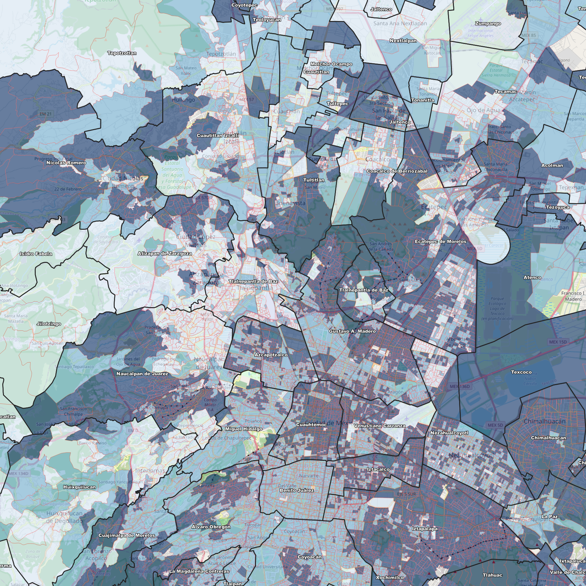

Hemos consolidado más de 30 variables clave de elecciones y tendencias delictivas en un GeoPackage de alta precisión para CDMX y EDOMEX.

Este mapa de calor muestra la intensidad de nuestro análisis base. **Los 30 Indicadores Confidenciales** (la clave de la estrategia) **están disponibles para interactuar** en una sesión de demo privada y segura.
SOLICITA TU DEMO PRIVADA Y SEGURA**¡Importante!** Por la confidencialidad de la información y la propiedad intelectual del GeoJSON, el acceso completo solo se otorga bajo supervisión directa.